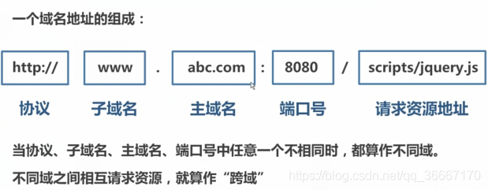

PHP基础知识AJAX基础知识页面提交数据的几种方式请求类型发送数据的几个步骤onreadystatechange事件 请求失败ajax事件同源和不同源跨域和解决跨域后台设置PHP头SRC+JSONPJQ中的JSONPform表单格式化（JQuery）JSONart-template模板引擎
数据库管理员：DBA
echo PHP中的输出语句
apache web服务器的意思
php 忘记加；会报错
b（browser浏览器）/ s（server服务器）和c（client客户端）/ s（server服务器）
b/s优势
b/s劣势
c/s优势
c/s劣势
php的数组
xxxxxxxxxx21$myarr = array(1,2,3);2echo $myarr[1];打印复杂数据类型
print_r（变量）；
接受前台提交的数据
xxxxxxxxxx11$_GET();数组长度 count（数组);
表单的提交方式
xxxxxxxxxx61<form action="./Star.php" method="GET" name="uname">2//记得表单加name属性3//这种提交数据方式会刷新页面4//form表单提交的本质是在url的后面拼接name和value5//上传文件form表单要加的一句话6enctype="multipart/form-data"
php获取上传文件时会到临时目录中 一旦php执行完毕临时目录就会销毁
sleep(5) 方法 是延时执行的意思 单位是s
移动上传的文件 move_uploaded_file() 第一个参数是是移动谁 第二个参数是移动到哪去（注意要加个名字）
报文是什么？（http协议）请求报文 相应报文
form表单
因为这种方式提交数据会刷新页面 提交的时候还要传属性所以渐渐被Ajax替代
ajax
不刷新提交（获取）数据，容量大
get请求
post请求
xxxxxxxxxx211// 点击事件2document.querySelector('input').onclick = function(){3//1.创建对象4var xhr = new XMLHttpRequest();5//2.设置请求行(参数1：请求类型；参数二：请求地址；参数三：是否异步)6xhr.open('get','getData.php?name=rose&skill=swim',false);7//3.设置请求头(get请求可以省略,post不发送数据也可以省略)8// xhr.setRequestHeader(Content-type","application/x-www-form-urlencoded)9 //3.5注册回调函数10 xhr.onreadystatechange = function () {11// 获取数据12 if (xhr.readyState == 4 && xhr.status == 200) {13 console.log('请求成功');14 console.log(xhr.responseText);15 }16// 修改页面的dom元素17document.querySelector('h3').innerHTML = xhr.responseText;18 }19//4.请求主体发送(get请求为空，或者写null，post请求数据写在这里，如果没有数据，直接为空或者写null)20 xhr.send(null);21 }xxxxxxxxxx121//原生写法2$.ajax({3 url: ,4 type: '',5 dataType: 'jsonp',6 success: function(){7 8 },9 error: function(){10 11 }12 })ajax发送数据于表单请求头的区别 （重点）
ajax get发数据 请求头可以不写
post发数据要更改请求头的内容为
xxxxxxxxxx11"Content-type","application/x-www-form-urlencoded"form上传文件要改为
xxxxxxxxxx11enctype="multipart/form-data"method="POST"规定了form的上传方式
因为这个事件是状态该变时就执行没有可控性所以要加判断条件
xhr.readyState 是请求的次数 一共要四次 所以 xhr.readyState为4 的时候证明请求回来了
xhr.status是请求的状态 200代表成功 404代表页面不存在
所以判断条件可以这样写
xxxxxxxxxx31 if (xhr.readyState == 4 && xhr.status == 200) {2 console.log('请求成功');3 }XML最后拿数据的时候拿的是innerhtml(字符串) 而不是 标签
error 错误请求后函数内的三个参数
xxxxxxxxxx61$(document).ajaxStart(function () { //请求开始2 $('.cover').show();3 });4$(document).ajaxComplete(function () { //请求完成5 $('.cover').hide();6 });什么是跨域？

JavaScript出于安全方面的考虑，不允许跨域调用其他页面的对象。
xxxxxxxxxx51www.abc.com/index.html --> www.abc.com/service.php（非跨域）2www.abc.com/index.html --> www.efg.com/service.php（跨域 主域名不同）3www.abc.com/index.html --> bbs.abc.com/service.php（跨域 子域名不同）4www.abc.com/index.html --> www.abc.com: 81/service. php（跨域 端口号不同）5www.abc.com/index.html --> https:/www.abc.com/service.php（跨域 协议不同）xxxxxxxxxx11 header("Access-Control-Allow-Origin:*");原有src属性的标签自带跨域功能；所以可以使用script标签的src属性请求后台数据
xxxxxxxxxx11<script src="http://127.0.0.1/json.php">< /script>主要原理是利用了script 标签可以跨域请求的特点
JSONP的是在script标签的src里用get的方式拼接请求的数据
JSONP可用于解决主流浏览器的跨域数据访问的问题。但是有个缺陷，只能解决get请求，不能解决post请求。
用于src在加载数据成功后，会直接将加载的内容放到script标签中；所以，后台直接返回JSON字符串将不能在script标签中解析。因此，后台应该返回给前台一个回调函数名，并将JSON字符串作为参数传入。
主要方法是：动态创建script标签并让src指向后端，后端返回脚本内容，触发浏览器立即加载并执行相应js代码，从而实现前后端无刷新数据交互。
xxxxxxxxxx101<script>2 var script = document.createElement('script');3 //script.type = 'text/javascript';4 script.src = 'http://localhost:8080/json/?callback=handleData';5 document.body.appendChild(script);6 // 回调执行函数7 function handleData(res) {8 console.log(res);9 }10</script>xxxxxxxxxx111$.ajax({2 url: ,3 type: '',4 dataType: 'jsonp',5 success: function(){6 7 },8 error: function(){9 10 }11 })xxxxxxxxxx11var result = $('form').serialize(); 全部提交的意思
xxxxxxxxxx151{2 "home_info": {3 "blog_name": "/image/home/coderzml.png",4 "blog_bg": "/image/home/header_BG.jpg",5 "blog_font": "coderzml是一个关注前端技术的个人博客，用来记录学习和工作总结。",6 "nav": [7 "首页",8 "HTML+CSS",9 "JavaScript",10 "JQuery",11 "作品集",12 "关于我"13 ]14 }15}art-template 是一个简约、超快的模板引擎。
它采用作用域预声明的技术来优化模板渲染速度，从而获得接近 JavaScript 极限的运行性能，并且同时支持 NodeJS 和浏览器
下载引入
官网：https://aui.github.io/art-template/zh-cn/docs/index.html
xxxxxxxxxx21<!-- 引入模板文件 -->2<script src="./template.js"></script>定义模板
xxxxxxxxxx111<script type="text/template" id="tmp">2 <!-- 输出和原文输出 -->3 <p>我叫{{name}}</p>4 <p>我叫{{@provices}}</p>5 <!-- 循环内容 -->6 <h1> 我的爱好是 {{each hobbies}} {{$value}} {{/each}} </h1>7 <!-- 循环标签 -->8 {{each hobbies}} <h2>{{$value}}--{{$value}}</h2> {{/each}}9 <!-- 条件判断 -->10 {{if isShow.flag}} <h5>{{isShow.font}}</h5>{{/if}}11</script>还有很多语法在官网都能查到
模板写入script的原因
使用模板
xxxxxxxxxx151<script>2 let data = {3 name: "zml",4 provices: '地球',5 hobbies: ['打游戏', '敲代码', '旅游', '听歌'],6 isShow: {7 flag: false,8 font: '显示'9 }10 }11 // templata 参数1：模板的id 参数2：填充的数据12 let html = template('tmp', data);13 let p = document.querySelector('p');14 p.innerHTML = html;15</script>